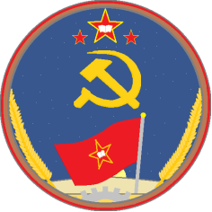

CDS 组旗及组徽介绍

组旗：共产主义民主学习小组旗
含义：、
红色配底：1840年以来无数为旧民主主义、新民主主义和共产主义奋斗的革命战士。
三颗金边红星：左侧红星代表进步学生青年、马克思主义者、广大革命的工人阶级；中间一颗红星代表革命的农民阶级；右侧红星代表革命的小资产阶级。
左上方：CDS字样代表组织：共产主义民主学习小组(The Conmmunism Democracy Studys)。
金色镰刀锤子：代表广大无产阶级的工农群众。
比例：3：2（288cm:192cm, 192cm:128cm)
组徽：民主学习小组徽
含义：
三颗金边红星：左侧红星代表革命的农民阶级；中间一颗红星代表进步学生青年、马克思主义者、广大革命的工人阶级；右侧红星代表革命的小资产阶级。
红旗和太阳：代表民主学习小组旗和广大革命者奋斗的方向：实现共产主义和民主主义。
外圈：代表无数革命者和无产阶级群众奋斗的光荣历史。
背景：夜空代表现今世界反动黑暗统治下革命者奋斗的曙光。
大地：代表小组成员必须脚踏实地地建设发展。
齿轮和镰刀：代表广大革命的无产阶级工人。
小麦和镰刀：代表广大革命的无产阶级农民。